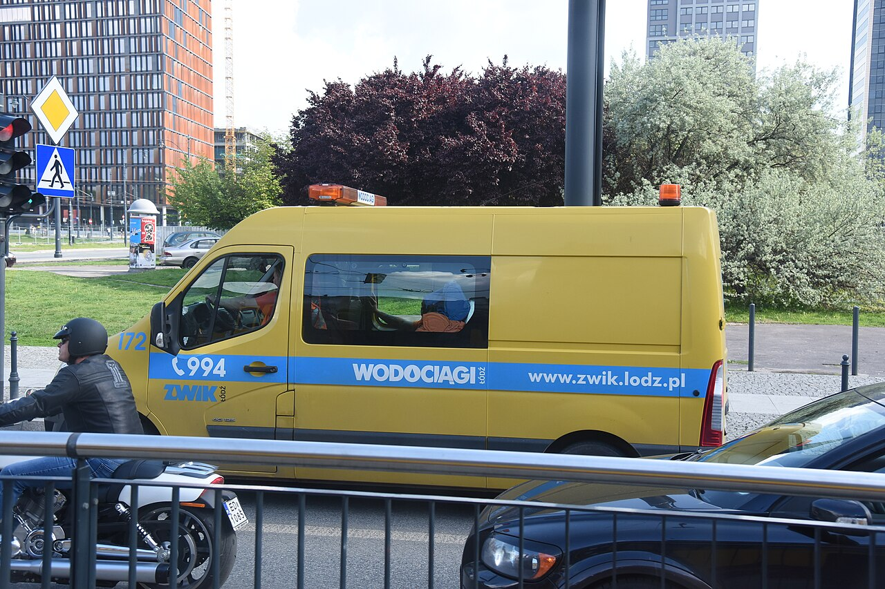

Planowane wyłączenia dostaw wody w Janinowie i Czarnym Lesie
W poniedziałek w godzinach od 8.00 do 15.00 nastąpi przerwa w dostawie wody w Janinowie oraz Czarnym Lesie ze względu na prace konserwacyjne sieci. Wyłączeniami objęte zostaną budynki przy wybranych ulicach w obu miejscowościach.
Zobacz źródło →